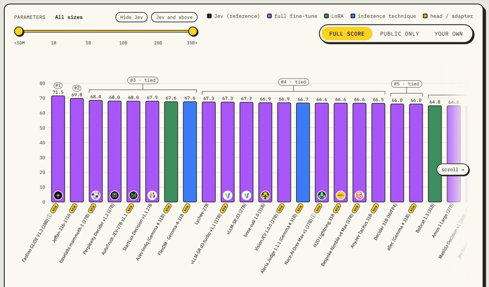
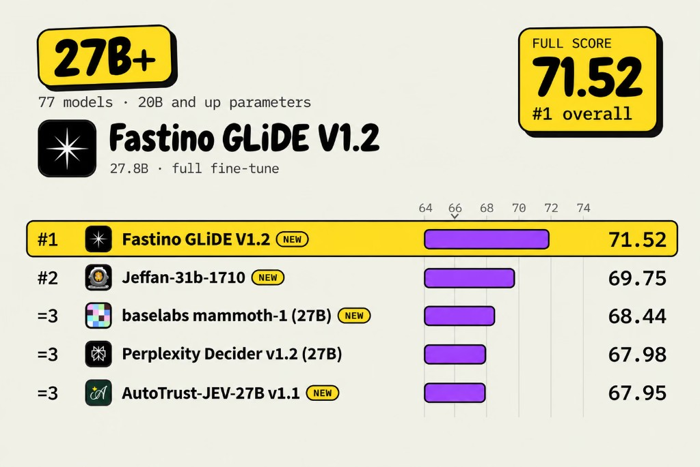

Trained multiple SOTA frontier models. These models beat models from top frontier labs, including OpenAI’s Decision API, Microsoft’s decision model, Baseten’s Mammoth-1, Perplexity’s Decider, and Cloudflare’s Clef. How to Train a SOTA Frontier Decision Model.


Creator of the Fastino GLiDE decision model.
Academic experience
Cambridge University Master’s in Physics
Undergraduate Dean’s List Prize (Ranked 13th out of 249 students, Top 10%), UROP Scholarship, Best Literature Review Prize.
3,200+ GitHub stars (sole author)
Achieved highest score in the world on the theoretical physics entrance exam (GRE Physics, 100% raw score, 990/990 scaled score). September 2025.
Queens’ College, Cambridge University Scholarship
Received PhD offer — King’s College, University of Cambridge — Statistical Learning in the context of Cosmology.
Gold in the British Mathematical Olympiad (BMO)
Formal-Verification-RSI. 2,900 stars on GitHub. Formal verification for AI: a Lean 4 + Dafny proof checker that catches fake AI proofs (reward hacking), and verified recursive self-improvement (RSI) for coding agents. AI for math, physics and software engineering.
Publications
arXiv:2610.02762. 4 other publications pending peer review in tier 1 journals.
OpenClaw and Hermes Agent official contributor with multiple merged PRs and PRs co-authored with the founder of Hermes Agent. Link.